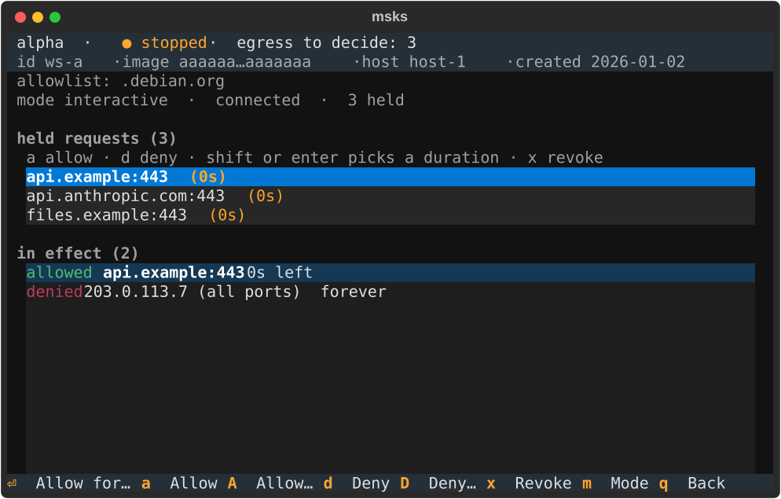

Egress consent¶
The consent layer decides, per workspace, where each new outbound connection is decided. It rides the per-VM chain the guest networking chapter builds — the same tap, the same resolver, the same nftables table — so the guest's every path out passes a gate the daemon owns.

A workspace picks its consent posture at create time
(msks create --egress-mode), and msks egress mode switches it
afterwards — see switching modes
live below. The posture decides where
each new outbound connection is decided:
allow(the create default). New flows pass. The daemon's resolver records each off-allowlist name the guest looks up, as an audit row, and that is the whole of it — the behavior plus the naming-layer audit.static. The workspace's allowlist (repeatable--allow SPECat create) is the policy. Allowlisted names resolve through the daemon's resolver and their addresses are pinned as allowed in the kernel chain for the answer's TTL, soapt updateagainst--allow .deb.debian.orgcompletes with no prompt and no hold. An off-list name answers NXDOMAIN — the guest learns nothing, and the lookup cannot serve as a resolution oracle or an exfil channel — and the denial is recorded as an audit row. Address-range entries (10.0.0.0/8,203.0.113.7:5432) accept in the chain directly.interactive. The first packet of every new flow queues to the workspace's own NFQUEUE number inside the host kernel, and msksd holds it until a decider answers:
workspace VM ──virtio-net──► tap ──► per-VM nftables chain
│ ESTABLISHED → accept (conntrack)
│ allowlist / prior verdicts → accept
│ NEW → NFQUEUE ──► msksd consent engine
│ │ verdict
│ ▼
│ accept + pin / drop + RST
▼ / expire
NAT → host uplink
A decider is any authenticated client that announced itself
on the events websocket (msks egress watch <workspace>).
New holds wait for a decider only while at least one is
connected, and the connection itself is the decider's
liveness. A hold created before the last decider left still
runs its timeout. Without a
decider an off-list connect fails fast — no prompt, no hang. The prompt names the DNS name (api.anthropic.com:443),
because the resolver is the one the DHCP lease hands the guest
and it remembers which name resolved to which address. A
destination given by address (a Postgres host) prompts with the
address itself and keys its verdict on the address.
Web flows while the interceptor is armed. A covered
workspace's TCP flows toward ports 80 and 443 redirect into
the interceptor
before the kernel chain, so those flows gate at the
interceptor itself. They gate on the name the wire carries,
which is the one thing the network layer cannot read: the SNI
of the TLS handshake on HTTPS, the Host header on plain
HTTP. The name counts only when the daemon's naming memory binds it
to the connection's address, which happens when the guest
resolved it through the daemon's resolver. An address the
memory never learned (a hosts-file entry) keys the gate by the
address itself, exactly as the kernel queue keys a raw-IP
connect. A name claiming an address the memory holds under a
different name keys by that name. A name's allowlist entry or
verdict therefore covers no address it never resolved to. The decision table matches the resolver gate's precedence: a
standing deny verdict first, then the static allowlist (name
specs against the gated name, address specs against the
original destination), then a standing allow, then the mode.
static records the denial and answers a local HTTP 403.
interactive holds through the consent engine, so the same
decider endpoints answer the same rows the kernel queue
writes; an allow completes the handshake, and a deny answers
the 403 locally (nothing forwards). The 403's body names what happened. A verdict's refusal says
consent denied the destination. A flow that lost the duplicate
race says a decision for the destination is already pending
and points the operator at the consent prompt. A prompt no
decider answered (none registered, or the request expired
undecided) says so. A request that ended without a decision
(the gate failed, the prompt cap refused the hold, or the
workspace vanished, stopped, or switched mode mid-hold) says
that instead. Verdicts and durations are shared: one allow
covers the destination's web flows and its other ports alike,
and the session memory that skips re-prompting is one table for
both gates. The gating boundary is the connection, both protocols alike.
A TLS handshake gates once; kept-alive requests, several Hosts
included, ride the connection's own verdict until it closes. A
plain connection answers each destination once: a different
Host gates fresh, and repeats of the same destination share
the connection's own answer. msks egress revoke therefore stops a destination's next
connection and its first plain request on a fresh connection.
Connections that already carry consent (established TLS, or a
plain connection that already answered that destination) keep
it until they close. The kernel path additionally kills
established flows with their conntrack entries; the
interceptor's connections have no conntrack entry to kill.
Verdicts and durations. msks egress decide records
allow/deny with a duration — once (this connection only; a
reconnect re-prompts), 5m, 15m, tilrestart (until the VM
stops; the default), forever (the workspace's lifetime — replayed
at every boot). An allow pins the destination in the kernel for its
duration and covers the name, so a CDN-rotated address of an
allowed host resolves and passes without re-prompting. A deny
answers the SYN and its retransmits with a TCP RST — the guest's
connect() fails immediately instead of hanging on the kernel's
retransmit timer. On an address two names resolved to (shared hosting, a CDN
front), a verdict stays with its own name. The address carries
no allow pin while both names' resolutions are live; each new
connection gates at the queue, named by whichever resolution
came last. A deny refuses only its own connection (a per-flow
RST, keyed by that connection's source port). The pins the
address already carried are withdrawn the moment the second
name resolves to it, except the pins a verdict given by
address owns: those are address-scoped by construction and
re-pin after the withdrawal. The queue attributes a connection to the most recent
resolution of its address. A guest whose cached resolution
outlives a later one for the same address is indistinguishable
at this layer; separating those needs the connection's own
hostname (TLS SNI), which the network layer does not read. A static workspace keeps its allowlist pins on a shared
address: its chain has no queue to hand a withdrawn pin's
connections to, and the allowlist's resolved-address pins are the
whole of its enforcement. msks egress revoke undoes an in-effect verdict at once. The
pinned rules clear, the destination's live connections die with
their conntrack entries (on a shared address that includes the
co-resident's live connections to it), and new connections
gate again. Every row — request, verdict,
expiry, revocation — lands in the consent table with its
provenance, pruned past MSKSD_EGRESS_CONSENT_RETENTION_DAYS and
the per-workspace MSKSD_EGRESS_CONSENT_ROW_CAP; with
MSKSD_AUDIT_HMAC_KEY set each row also carries an HMAC-SHA256
tag over its columns.
The naming layer owns DNS. Ports 53 and 853 toward anywhere but
the daemon's own resolver drop in the per-VM chain, in every mode,
so the guest cannot route around the resolver that names its
prompts. Plain-IP egress to a DoH endpoint on 443 is enforced like
any other flow — in static/interactive it meets the same
destination gate.
Fail-closed, by construction. The queue rule carries no
bypass: a queue with no listener (msksd down, the consumer not
yet bound) and a full queue both drop. That is the opposite
default of a sidecar-in-netns design, which inherits the
namespace's plumbing only while its process lives. Each workspace owns its queue number
(derived from its address-pool slice), so one workspace flooding
SYNs delays only its own verdicts. And the whole mechanism — taps,
chains, queues, the resolver, the verdict table — lives in the
host's kernel and msksd's userspace: guest root sees none of
it (no syscall, no /proc, no signal target).
Local-only semantics. Per-flow holds are the local backend's enforcement; the consent API itself (requests, verdicts, durations, revocation, audit) is enforcement-agnostic, so a future backend can drive a different mechanism from the same model.
Switching modes live¶
msks egress mode <ws> <mode> [--allow SPEC]... (or m in the
decider TUI, from any of its screens) moves a workspace between the three
postures without recreating it. The row's mode and allowlist change at once. A running
workspace then swaps its whole per-VM table in one nft
transaction (the same maneuver the interceptor's arm/disarm
uses), carrying the consent elements (verdict pins,
resolver-learned allows) across. Established connections
survive the switch, and an attached msks ssh session stays
up. A
stopped workspace builds the new posture at its next start.
The switch keeps three invariants:
- The queue never dangles. Entering
interactivebinds the workspace's NFQUEUE consumer before the chain references the queue. Leaving it installs the queue-less table first and unbinds the consumer after. An unbound queue drops, so the order is the whole rule. - Held requests answer. A switch away from
interactivefail-closes every hold the workspace still owns — the held SYNs answer deny at once rather than waiting out the timeout against a queue that no longer exists. - Verdicts carry. The consent rows survive every switch,
and enforcement follows the current mode: an
allow forevergranted underinteractivekeeps acting understatic(name-keyed verdicts at the resolver, address-keyed ones re-pinned into the fresh table's sets).staticafter aninteractivesession is therefore the frozen consent set: everything approved so far, and nothing else. The pins rebuild from the rows across a direct gated→gated switch and at every gated entry; a round-trip throughallowre-pins theforeverrows, while a timed address-keyed allow re-prompts or re-learns on the guest's next resolution.
The resolver flips with the chain in the same step, so a switch to
static starts answering off-list names with NXDOMAIN mid-session
(the guest's cached answers run out on their own TTLs). A switch to static with nothing effectively allowed (an
empty allowlist and no in-effect allowed verdict) is refused
with a message naming the escape: --allow entries, or
--offline to run the switch. That posture answers every name
NXDOMAIN, an offline workspace. The daemon logs each switch and broadcasts a
refreshed egress.rules frame, so an attached TUI repaints its
header without reconnecting.
The probe endpoint¶
The daemon serves one deliberately ordinary HTTPS service every
workspace can reach: https://secretprobe.msks/ — an emulated
external endpoint protected by HTTP basic auth, username msks,
password msks. It exists so an operator can verify from inside a workspace
that secret interception works end to end. The ok page
it answers with can only exist when the whole chain ran:
redirect, TLS splice, leaf mint, and the sentinel-to-secret
swap.
The daemon seeds the machinery itself at first-time startup
(the daemon-wide placeholder named probe, whose secret is the
base64 of the whole credential bXNrczptc2tz), and the
interception CA is installed at first boot. Nothing is left to
do by hand. The
verification:
# on the host: read the seeded sentinel (token-gated API)
curl -s -H "Authorization: Bearer $TOKEN" https://msksd/api/v1/probe
# inside the workspace: the sentinel rides as the raw Basic blob
curl -H "Authorization: Basic <sentinel>" https://secretprobe.msks/
ok
A request that reaches the service has already passed the nft
redirect (guest TCP 80/443 to the per-tap interceptor
listener), the splice tier (the SNI matched an allowlisted
entry), and the daemon CA's leaf mint. The swap then rewrote
the raw blob into a well-formed credential. The interceptor's upstream dial was repointed to the
service's own per-tap port (probe_port, default 8644) and
verified against the service CA the daemon mints. The guest's
443 is the redirect's port; the service listener binds the
setting's unprivileged number, which a host wildcard cannot
squat. The service
validated the fixed pair. A broken link answers
distinctly: a TLS failure names the splice or the CA, a 401
names the swap (or a wrong credential), a timeout names the
redirect.
The endpoint performs no other action: it reads no workspace
state, accepts no commands, and returns no other data. The credentials are a fixed probe value shared by every
deployment, and the endpoint gates nothing beyond its own ok
page. That is also why the seeded row's sentinel is served
back over the token-gated API (GET /api/v1/probe): a token
holder already owns the daemon.
Two reachability notes. The probe answers only while the workspace is armed. A
workspace scoped against daemon-wide placeholders (no covering
row of its own) never arms, so its direct dial to
secretprobe.msks:443 finds nothing admitted and times out.
That posture is the documented way to opt a workspace out of
interception entirely. The guest's trust in its own interception CA is installed at
first boot on both images. Debian guests link it into the
system trust store. Both guests export SSL_CERT_FILE (a
bundle built from the platform's own roots with the CA
appended; the variable replaces the default lookup, so it must
carry both) and NODE_EXTRA_CA_CERTS for node-based clients,
plus GIT_SSL_CAINFO naming that same bundle for git. NixOS's
/etc/profile reads no
profile.d, so its sanctioned /etc/profile.local hook sources
the same exports — which also brings the LLM proxy's environment
alive there. On the NixOS image the trust then completes the NixOS way. A
background oneshot (msks-interceptor-ca, ordered after
cloud-init, one rebuild per fresh certificate, with a marker
no-oping later boots) runs nixos-rebuild switch, whose
evaluation reads the staged certificate into security.pki.
The system bundle itself therefore carries the CA, and every
client that reads the system bundle trusts it. node keeps its
own exported variable, and the exports remain the first-boot
bridge that keeps the workspace usable while that rebuild
runs.